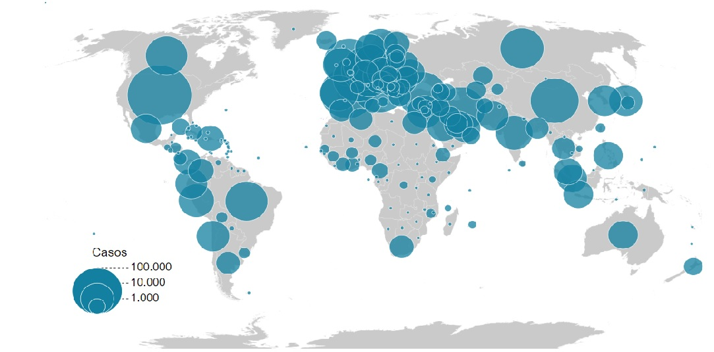
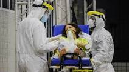

Central de notícias COVID-19

Casos de COVID-19 ao redor do mundo:
FIQUE
EM ALERTA!
 O que é COVID-19?
O que é COVID-19?
COVID-19 (do inglês Coronavirus Disease 2019) é uma doença infeciosa causada pelo
coronavírus da síndrome respiratória aguda grave 2 (SARS-CoV-2).
Os sintomas mais comuns são febre, tosse e dificuldade em respirar.
Cerca de 80% dos casos confirmados são ligeiros ou assintomáticos e a maioria
recupera sem sequelas.No entanto, 15% são infeções graves que necessitam de oxigénio
e 5% são infeções muito graves que necessitam de ventilação assistida em ambiente hospitalar.
Os casos mais graves podem evoluir para pneumonia grave com insuficiência respiratória grave,
falência de vários órgãos e morte.
A doença transmite-se através de gotículas produzidas nas vias respiratórias das pessoas
infetadas.Ao espirrar ou tossir, estas gotículas podem ser inaladas ou atingir
diretamente a boca, nariz ou olhos de pessoas em contacto próximo.
Estas gotículas podem também depositar-se em objetos e superfícies próximos que podem
infetar quem nelas toque e leve a mão aos olhos, nariz ou boca,
embora esta forma de transmissão seja menos comum.
O intervalo de tempo entre a exposição ao vírus e o início dos sintomas
é de 2 a 14 dias, sendo em média 5 dias.
Entre os fatores de risco estão a idade avançada e doenças
crónicas graves como doenças cardiovasculares, diabetes ou doenças
pulmonares.
O diagnóstico é suspeito com base nos sintomas e
fatores de risco e confirmado com ensaios em tempo
real de reação em cadeia de polimerase para deteção
de ARN do vírus em amostras de muco ou de sangue.
Entre as medidas de prevenção estão a lavagem frequente das mãos,
evitar o contacto próximo com outras pessoas e evitar tocar com
as mãos na cara.A utilização de máscaras cirúrgicas é recomendada
apenas para pessoas suspeitas de estar infetadas ou para os cuidadores
de pessoas infetadas, mas não para o público em geral.Não existe
vacina ou tratamento antiviral específico para a doença.
O tratamento consiste no alívio dos sintomas e cuidados de apoio.
As pessoas com casos ligeiros conseguem recuperar em casa.
Os antibióticos não têm efeito contra vírus.
O SARS-CoV-2 foi identificado pela primeira vez em seres
humanos em dezembro de 2019 na cidade de Wuhan, na China.
Pensa-se que o SARS-CoV-2 seja de origem animal.
O surto inicial deu origem a uma pandemia global que
à data de 19 de abril de 2020
tinha resultado em 2 355 676 casos confirmados e 162 032
mortes em todo o mundo.
Os coronavírus são uma grande família de vírus que causam
várias doenças
respiratórias, desde doenças ligeiras como a constipação até doenças
mais graves como a síndrome respiratória aguda grave (SARS).
Entre outras epidemias causadas por coronavírus estão a epidemia de SARS
em 2002-2003 e a epidemia de síndrome respiratória do Médio Oriente (MERS)
em 2012.
Previna-se contra o novo Coronavirus!
Saiba maisNoticias em destaque

O ALCANCE MUNDIAL DA DOENÇA:
Um mapa produzido pela BBC e atualizado automaticamente mostra a expansão do coronavirus pelo mundo desde que foi identificado na província de Hubei em dezembro de 2019.
CASOS CONFIRMADOS NO BRASIL:
Secretarias estaduais de saúde contabilizam 37.437 infectados e 2.388 mortos em todos os estados. No ultimo sábado (18/04/2020), foram confirmadas 300 mortes.